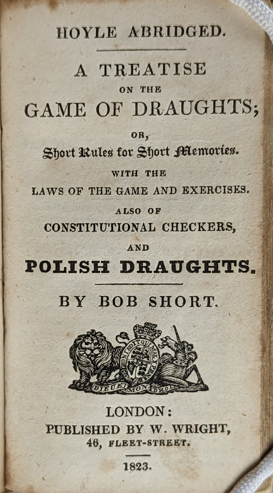

A Descriptive Bibliography of Edmond Hoyle
Copyright © 2014-26 by David Levy
(page updated 2023-11-26)User Guide
Shackell.Draughts.1823
A Treatise on the Game of Draughts, published by W. Wright, 1823.
 |
Title: | HOYLE ABRIDGED. | [short rule] | A TREATISE | ON THE | GAME OF DRAUGHTS; | OR, | Short Rules for Short Memories. | WITH THE | LAWS OF THE GAME AND EXERCISES. | ALSO OF | CONSTITUTIONAL CHECKERS, | AND | POLISH DRAUGHTS. | [short rule] | BY BOB SHORT. | [printer's device] | LONDON: | PUBLISHED BY W. WRIGHT, | 46, FLEET-STREET. | [short rule] | 1823. |
| Collation: | 10.9 x 6.1: A12 [$½ signed]; 12 leaves, pp. [1–3] 4–24 |
| Contents: | Signature (Page) Reference | Contents | Signature (Page) Reference | Running Titles |
| A1r (1) | title | |||
| A1v (2) | ‘[short rule] | LONDON: | SHACKELL AND ARROWSMITH, JOHNSON'S-|COURT, FLEET-STREET. | [short rule]’ | |||
| A2r–A10r (3–19) | ‘THE | GAME OF DRAUGHTS. | [...]’ | |||
| A10v–A11r (20–21) | ‘CONSTITUTIONAL CHECKERS. | [...]’ | |||
| A11v–A12v (22–24) | ‘THE GAME | OF | Polish Draughts. | [...] | [colophon]’ |
| Plates: | on A2r(3) woodblock: A couple playing draughts on A3r(5) woodblock: Draught Table |
| Publisher: | William Wright |
| Printer: | Shackell and Arrowsmith |
| Colophon: | ‘LONDON: | Shackell and Arrowsmith, Johnson's-court.’ |
| Copies Seen: | Levy [1620] |
| Other Copies: | AWn [PR1474.E58] |